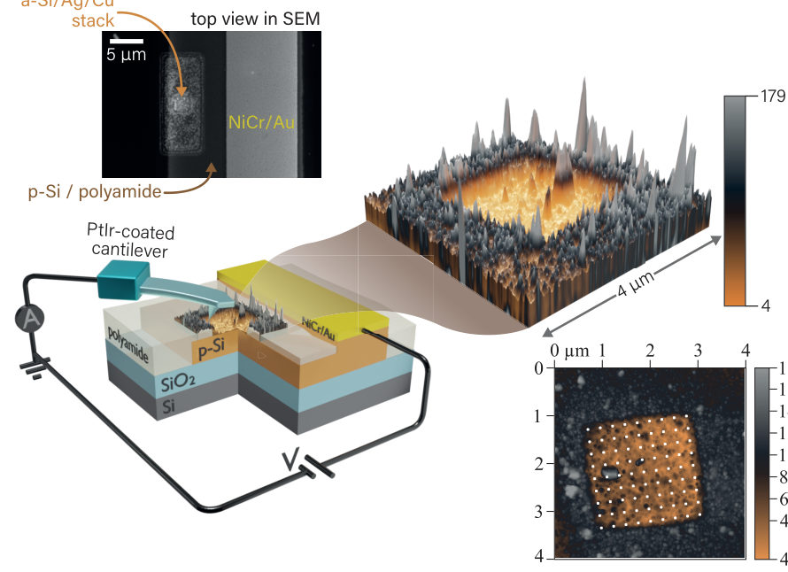

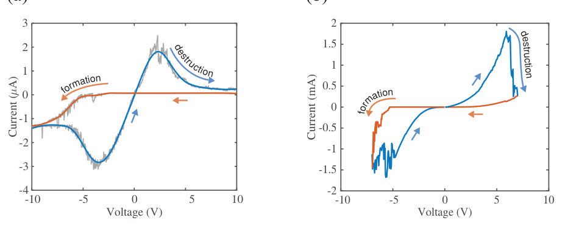
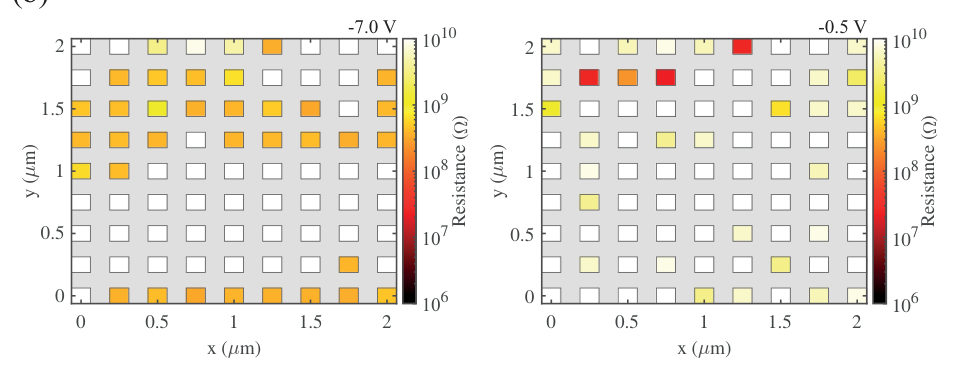
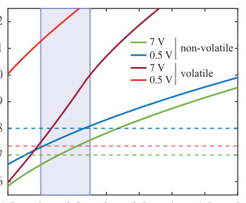
← Index · ← Previous · Next →
Authors: A K M Ashiquzzaman Shawon, Eoghan Downey, Shane Smolenski, Thomas J. Hicken, Amir Henderson, Mingyu Xu, Trisha Musall, Rafael Lopes Sabainsk, Yuan Zhu, Weiwei Xie, Elena Gati, Lu Li, Zurab Guguchia, Na Hyun Jo
Type: experiment · Category: strongly correlated electrons · PDF: https://arxiv.org/pdf/2605.01088v1
Analysis basis: full PDF text, analyzed in chunks
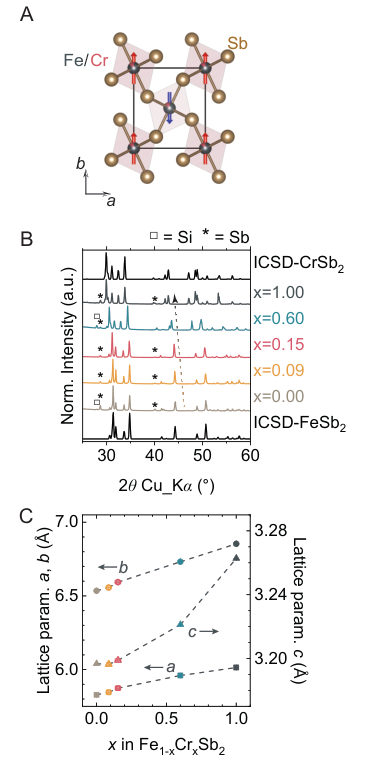
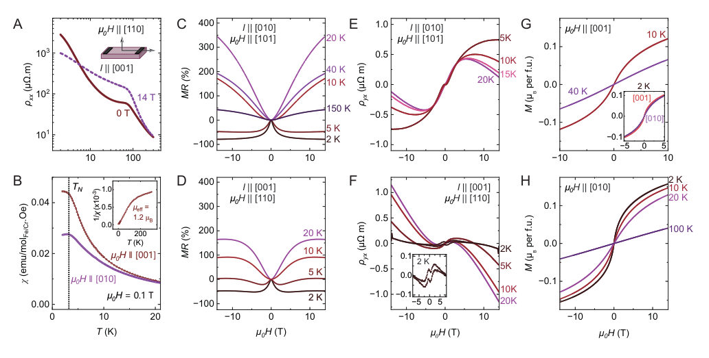
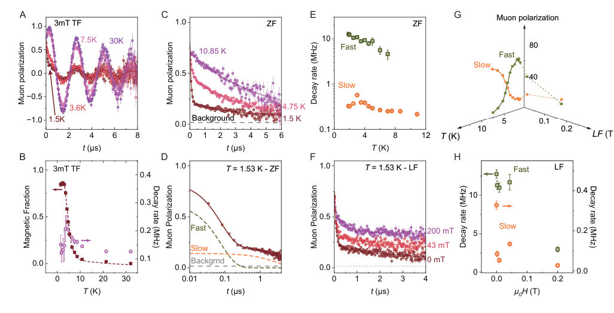
Summary. This paper provides experimental evidence for altermagnetism in Cr-doped FeSb2 by demonstrating a spin-compensated magnetic state that breaks time-reversal symmetry. The observation of a spontaneous anomalous Hall effect and bulk magnetic order supports the theoretical prediction of a d-wave altermagnetic ground state.
Why it may be interesting. not directly relevant
Main problem. To investigate the magnetic ground state of Cr-doped FeSb2 and provide experimental evidence for the existence of altermagnetic order.
Main result. The study identifies a spin-compensated magnetic ground state with broken time-reversal symmetry, evidenced by a spontaneous anomalous Hall effect and bulk magnetic order below 3.5 K.
Method. Single crystals of Fe1-xCrxSb2 were grown via the Sb-flux method and characterized using X-ray diffraction, magnetometry, electrical transport measurements, and Muon Spin Relaxation (uSR).
Model / system. The physical system is Cr-doped FeSb2 (specifically Fe0.85Cr0.15Sb2), which possesses an orthorhombic marcasite-type crystal structure and is a candidate for d-wave altermagnetism.
Key observables. Magnetic susceptibility, magnetization, longitudinal resistivity, Hall resistivity, magnetoresistance, and muon spin relaxation decay rates.
Important parameters / regimes. Néel temperature (TN) of approximately 3.5 K, Cr-doping concentration (x), and magnetic anisotropy along the b-axis.
Assumptions / limitations. The magnetic order is assumed to be intrinsic and bulk-like rather than due to impurity phases, a claim supported by uSR.
Figures summary. Fig 1 shows the crystal structure, XRD patterns, and lattice parameters; Fig 2 displays temperature-dependent resistivity, magnetoresistance, Hall resistivity, and magnetization; Fig 3 presents uSR spectra under zero and longitudinal fields.
Paper structure. The paper begins with crystal growth and structural characterization, followed by magnetic and transport property measurements, then presents muon spin relaxation data to confirm bulk order, and concludes with a discussion of the altermagnetic state.
Altermagnets are a class of materials with compensated magnetic moments, in which spin sublattices are related by specific symmetries other than inversion or translation. This allows time-reversal symmetry to be broken without a net magnetization. Here, we synthesize single crystals of Fe1-xCrxSb2 and investigate their electrical transport and magnetic properties, with a focus on Fe0.85Cr0.15Sb2. Magnetization measurements suggest spin-compensated ordering below ~ 3.5 K, where magnetic moments align along the crystallographic b-direction. Transport measurements reveal a crossover from large positive to negative magnetoresistance, while an anomalous Hall response emerges below 3.5 K, indicating time-reversal symmetry breaking below TN. Muon spin relaxation measurements demonstrate bulk magnetic order below 3.5 K, confirming that the low temperature ordering is intrinsic rather than due to an impurity phase. These results support a potential altermagnetic ground state in Cr-doped FeSb2 with time-reversal symmetry breaking without net magnetization.
Authors: Alessandra Ronchi, Masashi Mamada, Michel Frigoli, Angelo Monguzzi
Type: both · Category: other · PDF: https://arxiv.org/pdf/2605.01998v1
Analysis basis: full PDF text, analyzed in chunks
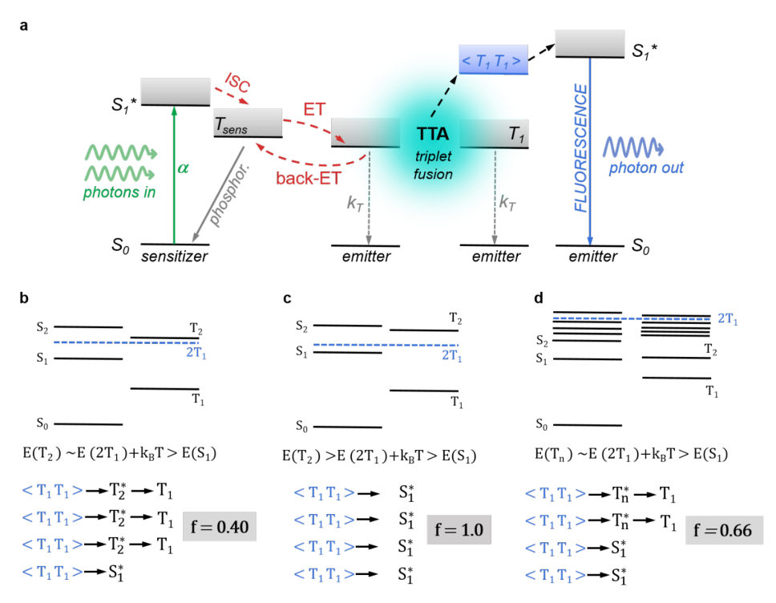
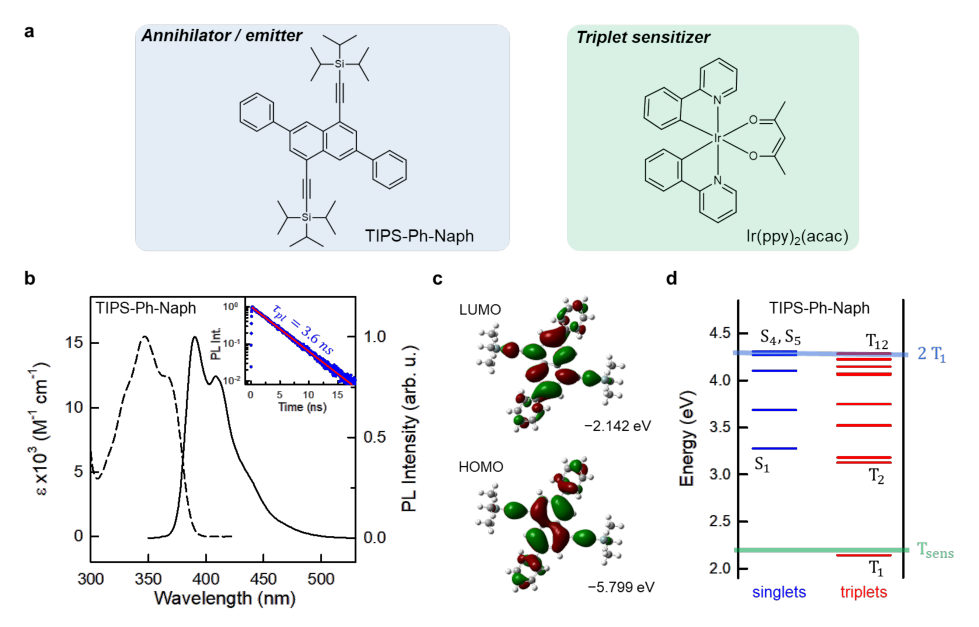
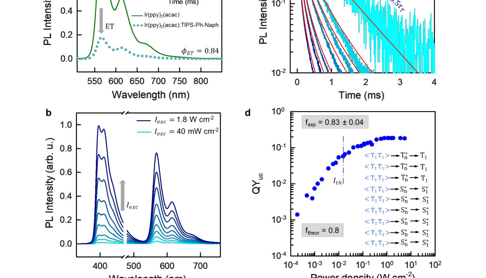
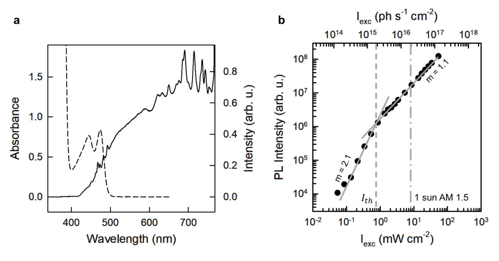
Summary. The researchers developed a way to maximize the production of high-energy photons from low-energy light by engineering the electronic structure of organic molecules. By tuning the energy levels to favor singlet formation during triplet collisions, they achieved high upconversion yields compatible with solar energy technologies.
Why it may be interesting. not directly relevant
Main problem. The efficiency of sensitized triplet-triplet annihilation upconversion (sTTA-UC) is limited by a low statistical factor (f) for singlet formation, often due to energy loss through accessible triplet states.
Main result. By engineering the excited-state energy landscape of a naphthalene-derived annihilator, the authors achieved a singlet generation yield (f) of 0.83 and an absolute upconversion yield of 0.19.
Method. The study combines molecular engineering via selective substitution, DFT/TD-DFT calculations to model the energy landscape, and experimental spectroscopy (steady-state and time-resolved) to validate the TTA process.
Model / system. A dual-dye solution consisting of an iridium complex sensitizer, Ir(ppy)2(acac), and a naphthalene-derived annihilator, TIPS-Ph-Naph, operating via Dexter energy transfer and triplet-triplet annihilation.
Key observables. Photon conversion quantum yield (phi_uc), statistical factor (f), upconversion peak wavelength, excitation intensity threshold (I_th), and triplet lifetime.
Important parameters / regimes. The transition from quadratic to linear power dependency, the activation threshold of 0.71 mW/cm2 under broadband excitation, and the resonance between the T1T1 complex and high-energy Sn states.
Assumptions / limitations. The design assumes that tuning the energy landscape to favor resonances with high-energy singlets is more effective than the traditional approach of avoiding all resonances.
Figures summary. Fig 1a shows the sTTA-UC photophysical process; Fig 4a compares absorption and excitation spectra; Fig 4b shows the upconversion intensity vs. excitation intensity, illustrating the quadratic-to-linear transition and solar compatibility.
Paper structure. The paper introduces the sTTA-UC efficiency bottleneck, describes the molecular design strategy and synthesis of the engineered annihilator, presents computational modeling of the energy landscape, provides experimental validation of the high singlet yield and upconversion efficiency, and concludes with the system's performance under solar-simulated conditions.
Photon upconverters are anti Stokes emitters capable of generating photons with higher energy than those absorbed. This behavior can be achieved through different mechanisms, which are extensively studied for applications in imaging, anticounterfeiting, information encryption and most importantly, solar energy technologies. Among these mechanisms, photon upconversion based on sensitized triplet-triplet annihilation (sTTA-UC) is particularly attractive because it operates under low intensity, incoherent light. In sTTA UC, two optically dark triplet states of a conjugated annihilator fuse upon collision to populate a higher energy fluorescent singlet, with the triplets initially generated via energy transfer from a lower energy sensitizer. Here we introduce a general molecular design strategy to maximize singlet generation through TTA. By selective substitution, we engineered a naphthalene derived annihilator with an excited state energy landscape that strongly favors singlet formation, achieving yields up to 0.83. When combined with an appropriate triplet sensitizer, the system delivers stable UV/visible upconversion peaking at 390 nm, with an absolute upconversion yield about 0.19 and an activation excitation intensity threshold lower than 0.1 suns under non-coherent broadband excitation fully compatible with the requirements of solar powered technologies.
Authors: Ammar A. Ellaboudy, Valentin V. Karasiev, S. X. Hu
Type: theory · Category: statistical mechanics · PDF: https://arxiv.org/pdf/2605.01593v1
Analysis basis: abstract only; PDF text extraction failed or PDF unavailable
Summary. This paper uses advanced first-principles simulations to study the optical properties of shock-compressed hydrogen-helium mixtures. It concludes that changes in optical reflectivity may not be a definitive signature of phase separation at low helium concentrations, challenging previous experimental interpretations of H-He demixing.
Why it may be interesting. not directly relevant
Main problem. Investigating whether optical reflectivity discontinuities can serve as a reliable diagnostic for H-He immiscibility (phase separation) under shock-compressed conditions relevant to Jupiter's interior.
Main result. The simulations show no reflectivity discontinuity at elevated temperatures and find that reflectivity predictions for a mixed system are consistent with experimental data in the demixing regime, suggesting reflectivity alone is not a sensitive diagnostic for low helium concentrations.
Method. Ab initio molecular dynamics simulations using the thermal Tr2SCANL meta-GGA functional for the equation of state and the RS-KDT0 range-separated thermal hybrid XC functional for optical properties via the Kubo-Greenwood formalism.
Model / system. A shock-compressed mixture of Hydrogen and Helium containing 11% helium (atomic fraction) under warm dense matter conditions.
Key observables. Optical reflectivity, equation of state, and ionic configurations.
Important parameters / regimes. 11% helium atomic fraction, shock-compressed regime, warm dense matter regime.
Assumptions / limitations. The study assumes the validity of the thermal Tr2SCANL and RS-KDT0 exchange-correlation functionals for predicting properties in the warm dense matter regime.
Paper structure. The paper introduces the problem of H-He demixing in Jupiter, describes the ab initio molecular dynamics and Kubo-Greenwood methodology, presents the calculated reflectivity and equation of state, and concludes by comparing results to experimental laser-shock data to evaluate the diagnostic utility of reflectivity.
Recent laser-shock experiments on an H--He mixture containing 11~$\%$ helium (atomic fraction) have suggested the presence of an immiscibility region inside Jupiter. Reflectivity measurements were used as the primary diagnostic of H--He demixing, with discontinuities in the optical reflectivity proposed as a signature of phase separation under conditions relevant to Jupiter's interior. Here, we investigate shock-compressed H--He using \textit{ab initio} molecular dynamics simulations with optical properties evaluated within the Kubo--Greenwood formalism. The equation of state and ionic configurations were obtained using the thermal Tr$^2$SCANL meta-GGA exchange--correlation (XC) functional, while optical properties were computed using the recently developed RS-KDT0 range-separated thermal hybrid XC, which provides state-of-the-art accuracy for band-gap predictions in the warm dense matter regime. The calculated reflectivity shows overall good agreement with experimental measurements; however, no discontinuity is observed at elevated temperatures. Moreover, the reflectivity predictions for the mixed system are consistent with the experimental measurements in the temperature range where the mixture is inferred to be demixed. These results suggest that reflectivity alone may not provide a unique or sensitive diagnostic of H-He demixing at low helium concentrations under these conditions.
Authors: Mamoru Matsuo, Naoki Nishimura, Ai Yamakage, Takeo Kato
Type: theory · Category: other · PDF: https://arxiv.org/pdf/2605.01678v1
Analysis basis: full PDF text, analyzed in chunks
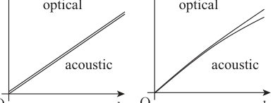
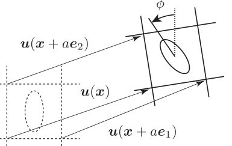
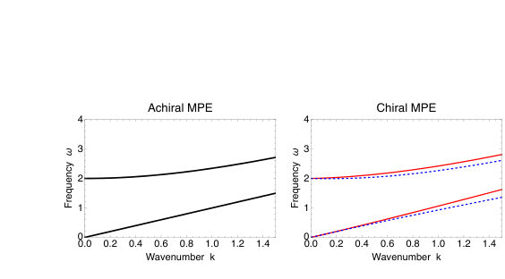
Summary. This paper establishes a new continuum theory for phonon angular momentum that bridges the gap between acoustic and optical phonons. By introducing a local rotation frame, it provides a consistent way to calculate angular momentum density and explains how structural chirality leads to the splitting of phonon modes.
Why it may be interesting. not directly relevant
Main problem. The lack of a unified continuum theory that can simultaneously describe both acoustic displacement modes and optical rotational modes within a single conservation law for phonon angular momentum.
Main result. The development of a generalized continuum theory using a local SO(3) material frame that identifies a definite phonon angular-momentum density and explains chiral phonon splitting.
Method. The authors use a local-frame formulation of micropolar elasticity, applying Noether's theorem to a Lagrangian density to derive conservation laws and analyzing the linearized limit and symmetry-breaking terms.
Model / system. A generalized continuum model of crystals/solids, specifically focusing on microstructures with rotational optical degrees of freedom represented by a local SO(3) material frame.
Key observables. Phonon angular momentum density (comprising orbital, displacement-polarization, and intrinsic microrotation parts), phonon dispersion relations, and chiral splitting of modes.
Important parameters / regimes. Mass density, moment of inertia, Lamé parameters, Cosserat/wryness moduli, and the chiral coupling constant.
Assumptions / limitations. The theory is applied in the long-wavelength (continuum) limit and assumes a regime where torsion and curvature terms are not required; the electron-spin coupling is deferred to future work.
Figures summary. Figure 1 shows a 2D schematic of microrotation and displacement fields in a lattice; Figure 2 shows phonon dispersion relations; Figure 3 compares transverse phonon dispersions in achiral versus chiral media.
Paper structure. The paper introduces the problem of unified phonon angular momentum, defines the local SO(3) material frame and co-rotated deformation gradient, applies Noether's theorem to derive angular momentum density, analyzes the linearized limit (micropolar elasticity), explores the locking limit and chiral splitting, and concludes with technical remarks on the hierarchy of continua.
We formulate a generalized continuum theory of phonon angular momentum in crystals by introducing a local SO(3) material frame in addition to the macroscopic displacement field. The local frame represents rotational optical degrees of freedom of the unit cell and brings acoustic displacement modes and optical rotational modes into a common long-wavelength continuum description. In the linearized limit, the co-rotated deformation gradient and the rotational gradient associated with the local material frame recover the Eringen microdeformation and wryness tensors; isotropic micropolar elasticity then appears as a special case. Rotational symmetry and Noether's theorem determine the continuum phonon angular-momentum density, including both the displacement-polarization contribution and the intrinsic microrotation contribution. The theory further identifies the locking limit in which microrotation reduces to lattice vorticity and the improper-symmetry-breaking terms responsible for chiral phonon splitting.
Authors: Shrestha Dutta, Rudra Banerjee
Type: theory · Category: disordered systems and neural networks · PDF: https://arxiv.org/pdf/2605.01754v1
Analysis basis: full PDF text, analyzed in chunks
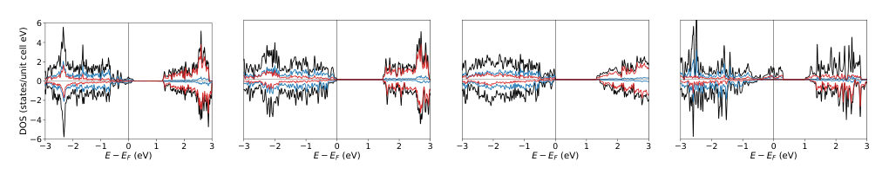
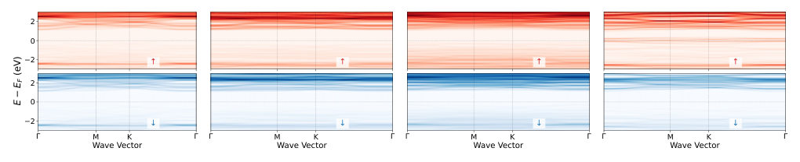
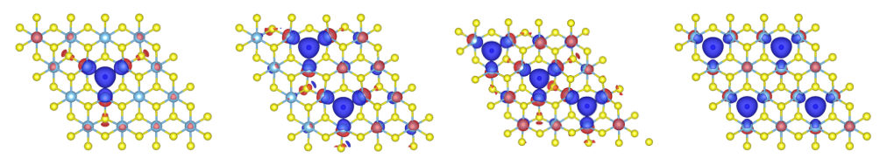
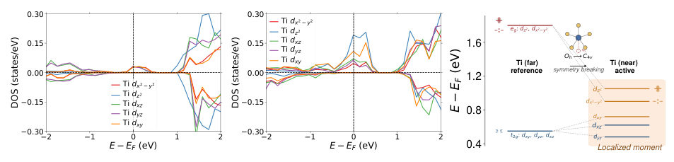
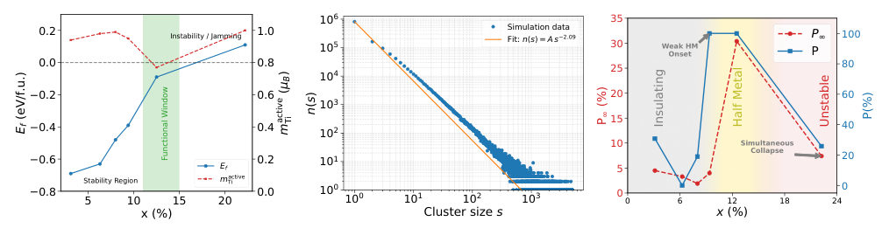
Summary. This paper demonstrates that the emergence of half-metallicity in sulfur-deficient TiS2 is a geometric percolation event rather than a simple concentration-dependent effect. It identifies a specific concentration window for stable spin-polarized transport and establishes a design principle for 2D spintronics based on defect connectivity.
Why it may be interesting. not directly relevant
Main problem. Resolving why defect engineering in 2D materials often produces local magnetic moments without achieving the desired itinerant half-metallic ferromagnetism.
Main result. The transition to half-metallicity in vacancy-doped TiS2 is driven by the geometric percolation of the vacancy network, occurring at a critical concentration of approximately 12.5%.
Method. The study combines Density Functional Theory (DFT) with large-scale Tight-Binding (TB) simulations and finite-size scaling analysis to study percolation universality.
Model / system. Monolayer 1T-phase titanium disulfide (TiS2) with sulfur vacancies, modeled using a 2D percolation framework and a large-scale tight-binding Hamiltonian on a triangular lattice.
Key observables. Spin polarization, giant cluster fraction (P_infinity), Fisher exponent (tau), Inverse Participation Ratio (IPR), and vacancy concentration (x).
Important parameters / regimes. Critical concentration x_c approx 12.5%, functional window 11% < x < 15%, and geometric jamming limit at x > 20%.
Assumptions / limitations. The mechanism is applicable to isostructural 1T-type TMDs with extended defect wavefunctions; Hubbard-U correction is used to model electron correlation.
Figures summary. Figure 5 shows thermodynamic limits and defect formation energy.
Paper structure. The paper introduces the paradox of defect engineering, details the electronic and magnetic mechanism via symmetry breaking, applies percolation theory to identify the critical threshold, discusses the functional window and jamming limits, and concludes with experimental signatures.
Defect engineering of two-dimensional materials routinely produces local magnetic moments, yet itinerant half-metallic ferromagnetism remains elusive -- experiments frequently yield paramagnetic insulators. We resolve this paradox for vacancy-doped monolayer $1T$-\ptis~by demonstrating that the insulator-to-half-metal transition is governed by universal geometric percolation of the defect network, extending the percolation framework established for three-dimensional diluted magnetic semiconductors into the 2D vacancy-doped regime. Half-metallicity emerges via a two-step mechanism: crystal-field symmetry breaking ($O_h \to C_{4v}$) selectively stabilizes the Ti $3d_{z^2}$ orbital, generating robust local moments ($0.94~μ_B$), but spin-polarized transport requires these moments to form a spanning cluster. At critical vacancy concentration $x_c \approx 12.5\%$, a percolation transition drives the majority-spin impurity band from flat, localized levels ($W < 0.1$~eV) to a dispersive 1.5~eV-wide band with 100\% spin polarization and a minority-spin gap of 1.0~eV. The percolation mechanism is independently corroborated by a striking supercell-size effect: at identical concentration, $2\times2$ cells yield antiferromagnetic order while $4\times4$ cells mandate ferromagnetism, reflecting the presence or absence of a spanning cluster. We estimate a Curie temperature exceeding 300~K from the exchange coupling, and identify a geometric jamming instability at $x > 20\%$ that fragments the network. These results define a narrow functional window ($11\% < x < 15\%$) for half-metallic operation and establish geometric connectivity as a quantitative design principle for defect-engineered 2D spintronics.
Authors: Han Lin Mai, Xiang-Yuan Cui, Tilmann Hickel, Simon P. Ringer, Jörg Neugebauer
Type: theory · Category: other · PDF: https://arxiv.org/pdf/2605.01181v1
Analysis basis: full PDF text, analyzed in chunks
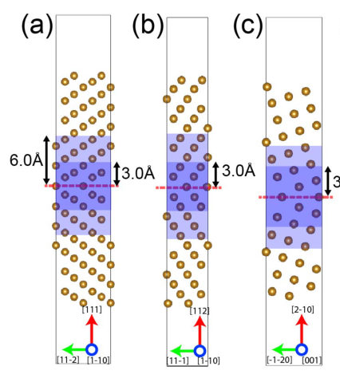
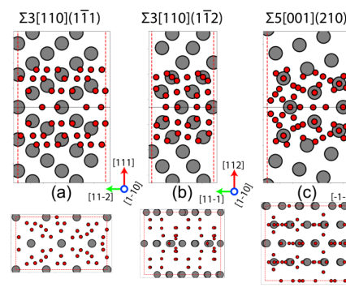
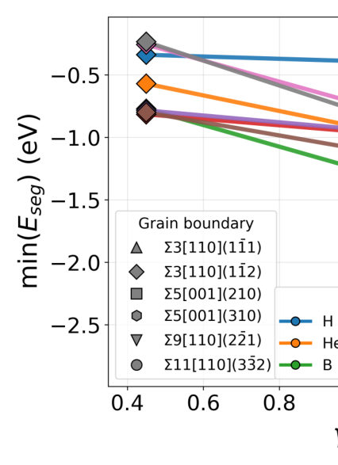
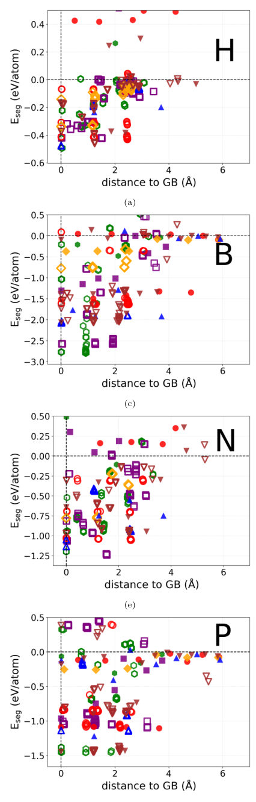
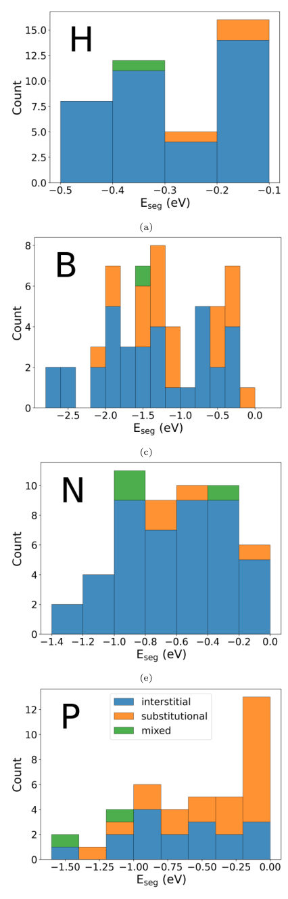
Summary. This paper provides a comprehensive DFT-based dataset and analysis of how light elements segregate to grain boundaries in iron. It demonstrates that the ability of a site to relax and accommodate strain is a better predictor of segregation than initial void volume, and classifies elements as either strengtheners or embrittlers.
Why it may be interesting. not directly relevant
Main problem. Understanding how the segregation of light elements (H, He, B, C, N, O, P, S) to grain boundaries in ferritic steels affects interfacial cohesion and macroscale properties.
Main result. The study identifies B and C as cohesion enhancers, while He, O, and S are potent decohesion agents; it also reveals that segregation is driven by a site's ability to accommodate strain rather than initial Voronoi volume.
Method. Density Functional Theory (DFT) calculations using the VASP package with the PBE functional, combined with bond-order (ANSBO) and Rice-Wang frameworks for cohesion analysis.
Model / system. Six specific Coincident Site Lattice (CSL) grain boundaries in bcc-Fe (including Sigma3, Sigma5, Sigma9, and Sigma11) with various light element solutes in interstitial and substitutional sites.
Key observables. Segregation energies (Eseg), grain boundary energy (gamma_GB), work of separation (WRGS), and bond orders (ANSBO).
Important parameters / regimes. Solute types (H, He, B, C, N, O, P, S), site volumes, and nearest-neighbor distances after relaxation.
Assumptions / limitations. The use of the PBE functional and the assumption that the Rice-Wang framework might be unphysical for certain elements like Helium due to rigid-grain separation assumptions.
Figures summary. Figure 1 shows GB atomic structures; Figure 3 shows the lack of correlation between GB energy and segregation strength; Figure 5 shows segregation energy distributions; Figure 7 shows the correlation between nearest-neighbor distance and segregation energy; Figures 8 and 9 show elemental cohesive effects.
Paper structure. The paper introduces the problem of light element segregation, describes the DFT methodology and site sampling strategy, presents results on segregation energy trends and cohesion modifiers, analyzes the structural drivers of segregation (volume vs. strain), and concludes with data availability.
Light elements play an important role in influencing the macroscale properties of engineering alloys through grain boundary (GB) segregation phenomena. However, the scarcity and scattered nature of ab initio datasets for light elements in steels makes reproduction and extraction of general trends from the literature difficult. Here, we present a comprehensive ab initio evaluation of the segregation energies and cohesive effects for H, He, B, C, N, O, P, S, extensively sampling both substitutional and interstitial sites in six model coincident site lattice (CSL) ferritic iron GBs using density functional theory (DFT). Cohesive effects are evaluated in both a quantum-chemistry bond-order and rigid Rice-Wang interfacial cohesive strength framework. Our calculations indicate that, compared at the same concentration, B and C enhance GB cohesion, N, P, H are mildly detrimental, and He, O, S as powerful decohesive agents/embrittlers. Sampling both interstitial and substitutional starting positions is necessary to accurately capture segregation spectra. Commonly utilised sampling criteria such as site volumes prove insufficient for identifying deepest GB binding sites. Solutes placed in either kind of site can induce large relaxations to the same final configuration, resulting in site classification ambiguity. The nearest neighbour distance of a solute to its neighbours after relaxation is shown to be a controlling factor for the lower threshold of segregation energies at sites. The freely available DFT dataset and analysis repositories are expected to advance understanding of GB segregation behaviours of light elements in steels and serve as a resource for developing machine learning interatomic potentials.
Authors: Xingyu Ma, Minghuan Zeng, Huaiming Guo, Shiping Feng
Type: theory · Category: strongly correlated electrons · PDF: https://arxiv.org/pdf/2605.01316v1
Analysis basis: full PDF text, analyzed in chunks
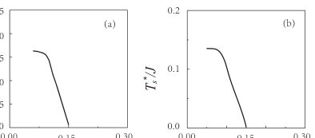
Summary. This paper proposes that the change in resistivity power-law from T-linear to T-quadratic in cuprates is caused by the suppression of spin-excitation-mediated Umklapp scattering due to the opening of a spin pseudogap. It provides a microscopic mechanism that links the transport properties directly to the evolution of the antinodal spin dynamics with doping.
Why it may be interesting. not directly relevant
Main problem. Explaining the origin of the crossover in low-temperature resistivity between the T-linear behavior in the overdoped strange-metal phase and the T-quadratic behavior in the underdoped pseudogap phase of cuprate superconductors.
Main result. The resistivity behavior is driven by impurity-scattering assisted electron Umklapp scattering from spin excitations; the opening of the antinodal spin pseudogap in the underdoped regime suppresses the spin excitation density of states, leading to T-quadratic resistivity.
Method. The authors use the Boltzmann transport equation within a microscopic pseudogap theory framework, specifically employing a fermion-spin transformation and the t-J model to derive the electron propagator and resistivity.
Model / system. The system is the normal-state of cuprate superconductors, modeled using a low-energy effective t-J model on a square lattice including nearest and next-nearest-neighbor hopping, chemical potential, and magnetic coupling.
Key observables. Low-temperature resistivity (rho), dc conductivity, antinodal spin pseudogap, and the pseudogap crossover temperature (T*)
Important parameters / regimes. Doping level (delta), temperature (T), impurity scattering rate (gamma_0), and the antinodal spin pseudogap magnitude
Assumptions / limitations. The study assumes the presence of natural impurities due to doping and focuses specifically on the low-temperature regime rather than high-temperature transport.
Figures summary. Figure 1 shows the electron spectral function intensity map; Figure 2 displays the antinodal spin pseudogap and its crossover temperature as a function of doping; Figure 3 and 4 show the T-quadratic and T-linear resistivity fits for underdoped and overdoped regimes respectively; Figure 5 plots the temperature scale as a function of doping.
Paper structure. The paper begins with the microscopic electronic structure and the t-J model, develops the pseudogap theory via fermion-spin transformation, applies the Boltzmann transport equation to investigate momentum relaxation via impurity-assisted Umklapp scattering, and concludes by comparing the results to different doping regimes.
The transport experiments reveal that the low-temperature resistivity in the normal-state of cuprate superconductors is quadratic in temperature (T-quadratic) in the underdoped pseudogap phase, while it is linear in temperature (T-linear) in the overdoped strange-metal phase, however, the full understanding of these different behaviours is still a challenging issue. Here starting from the microscopic electronic structure of cuprate superconductors, the low-temperature resistivity in the normal-state is investigated from the underdoped pseudogap phase to the overdoped strange-metal phase. It is shown that the mechanism requires both the impurity scattering and the umklapp scattering: the impurity scattering is needed to restrict the modification of the distribution function to at around the antinodal region,while the impurity-scattering assisted umklapp scattering from a spin excitation is at the heart of the behaviour in the low-temperature resistivity, where the doping dependence of the temperature scale exists, and presents a similar behavior of the antinodal spin pseudogap crossover temperature. In the low-temperature region above the temperature scale in the overdoped strange-metal phase, the resistivity is T-linear, however, in the low-temperature region below the temperature scale in the underdoped pseudogap phase, the opening of the spin pseudogap lowers the spin excitation density of states at around the antinodal region, which reduces the strength of the electron umklapp scattering from a spin excitation associated with the antinode, and thus leads to a T-quadratic behaviour of the resistivity.
Authors: Siya Zhu, Raymundo Arróyave
Type: theory · Category: statistical mechanics · PDF: https://arxiv.org/pdf/2605.01031v1
Analysis basis: full PDF text, analyzed in chunks
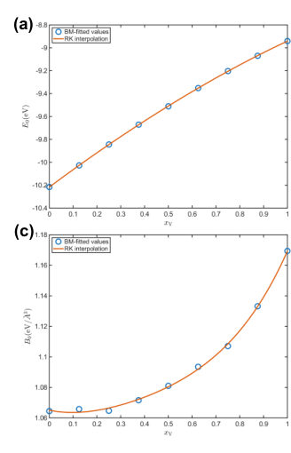
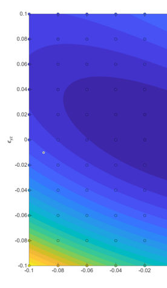
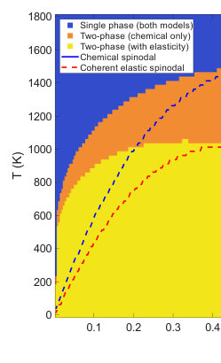
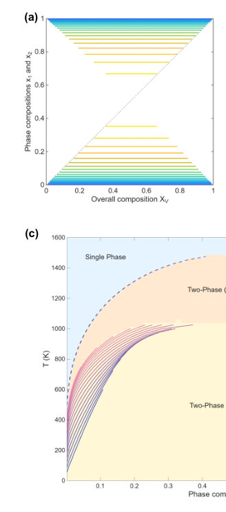
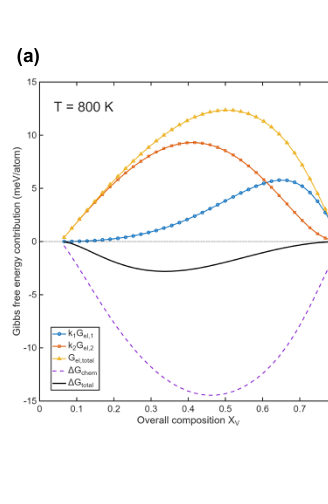
Summary. This paper develops a thermodynamic model to show that coherent elastic strain is a critical factor in suppressing phase separation in lattice-mismatched alloys. By incorporating elastic compatibility into phase-diagram calculations, the authors successfully align theoretical predictions for the Nb-V system with experimental observations. The work demonstrates that elastic constraints fundamentally change the nature of phase equilibria by making coexistence compositions dependent on the total alloy composition.
Why it may be interesting. not directly relevant
Main problem. Investigating how coherent elastic strain influences phase separation thermodynamics and the width of the miscibility gap in alloys with significant lattice mismatch.
Main result. Coherent elasticity substantially suppresses phase separation, narrows the miscibility gap, and lowers the critical temperature, while making equilibrium compositions dependent on the overall alloy composition.
Method. A thermodynamic framework combining DFT-derived chemical free energies with explicit coherent elastic contributions using both isotropic and biaxial strain models.
Model / system. The BCC Niobium-Vanadium (Nb-V) binary alloy system, modeled using a combination of CALPHAD-style chemical free energies and mechanical compatibility constraints (isotropic and biaxial).
Key observables. Coherent binodal and spinodal boundaries, critical temperature (Tc), miscibility gap width, and equilibrium phase compositions (x1, x2).
Important parameters / regimes. Lattice mismatch, temperature (T), overall alloy composition (X), and elastic parameters (bulk modulus, pressure derivative, and biaxial expansion coefficients).
Assumptions / limitations. Neglect of PV terms and electronic entropy; approximation of vibrational entropy as linear in composition; assumption of an ideal random-solution configurational entropy.
Figures summary. Figure 1 shows composition dependence of properties; Figure 2 shows the energy surface as a function of biaxial strain; Figure 4 compares decomposition compositions in chemical-only vs. coherent-elastic models; Figure 5 analyzes the elastic origin of the suppression mechanism.
Paper structure. The paper introduces the problem of lattice mismatch in phase separation, presents a thermodynamic framework integrating chemical and elastic energies, compares isotropic and biaxial models, validates the model against DFT and experimental data, and discusses the qualitative shift in phase boundary interpretation.
Coherent elastic strain is an important but often neglected contribution to phase-separation thermodynamics in alloy systems where decomposed phases have appreciable lattice mismatch. We develop a thermodynamic framework that incorporates coherent elastic compatibility directly into phase-diagram calculations alongside conventional CALPHAD chemical free energies. Applied to the BCC Nb-V system, the framework shows that coherent elasticity substantially suppresses phase separation, narrows the miscibility gap, and lowers the critical temperature toward experimentally observed values. Beyond these quantitative effects, the coherent constraint qualitatively alters the interpretation of phase equilibria: the equilibrium decomposition compositions become functions of both temperature and overall alloy composition, so the two-phase boundary no longer represents unique coexistence compositions. These results establish coherent elasticity as a key thermodynamic factor in lattice-mismatched systems and provide a general framework for coherent phase-diagram modeling.
Authors: Max Rang, Paul J. Kelly
Type: theory · Category: other · PDF: https://arxiv.org/pdf/2605.02548v1
Analysis basis: full PDF text, analyzed in chunks
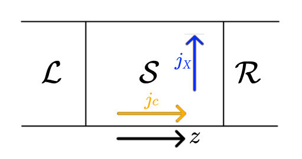
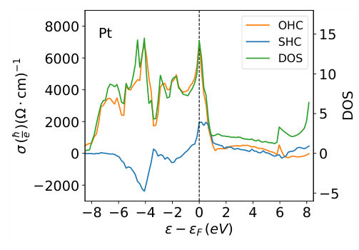
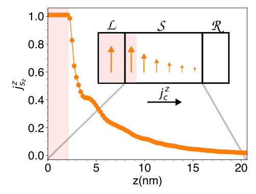
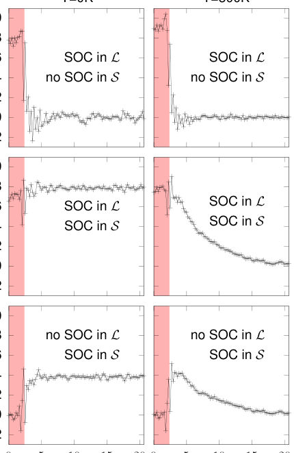
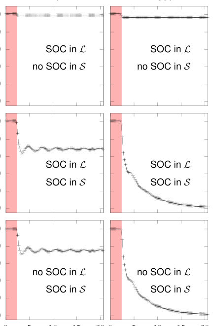
Summary. The study uses first-principles calculations to show that injected orbital angular momentum currents in transition metals decay much more rapidly (within a few atomic layers) than previously thought. It reveals that spin-orbit coupling plays a crucial role in converting these short-lived orbital currents into longer-lived spin currents.
Why it may be interesting. not directly relevant
Main problem. Investigating the decay length scale of injected orbital angular momentum (OAM) currents in transition metals and addressing the discrepancy between theoretical predictions and experimental interpretations.
Main result. Orbital currents decay rapidly within a few atomic layers upon injection, unlike spin currents which have longer diffusion lengths; however, in the presence of spin-orbit coupling, injected orbital current is partially converted into a spin current.
Method. First-principles quantum mechanical scattering calculations using a tight-binding muffin-tin orbital (TB-MTO) basis and Ando's Wave Function Matching scheme.
Model / system. Transition metals (including Pt, Ti, V, Cr, and Cu) modeled as a scattering region sandwiched between two semi-infinite leads, incorporating spin and orbital Zeeman terms to create polarized leads.
Key observables. Charge, spin, and orbital currents (j_c, j_s, j_l); orbital Hall conductivity (OHC); spin Hall conductivity (SHC); spin-flip and orbital diffusion lengths.
Important parameters / regimes. Spin-orbit coupling (SOC) strength, thermal lattice disorder (temperature), and spin-flip diffusion length (l_sf).
Assumptions / limitations. The orbital diffusion length is assumed to be driven by electronic hopping; SOC is sometimes switched off in the scattering region to isolate orbital effects; the orbital Zeeman term is used as a proxy for orbital polarization.
Figures summary. Schematic of the L|S|R geometry for current generation; plots showing the decay of injected orbital polarization in Pt, Cr, and V; and visualization of current density in the leads.
Paper structure. The paper introduces the problem of OAM decay, describes the TB-MTO scattering formalism, presents results for various transition metals (Pt, 3d metals), discusses the role of SOC and disorder, and concludes with implications for orbitronics.
We use quantum mechanical scattering calculations implemented in a basis of tight-binding muffin-tin orbitals to calculate nonequilibrium spin and orbital currents in transition metals with a view to understanding the length scale on which they decay. In the case of spin currents, the relaxation length, called the spin-flip diffusion length, is reasonably well understood. We apply our experience with spin currents to study orbitally-polarized currents and find that they behave qualitatively differently. Upon injection from a lead, orbital currents decay within a few atomic layers contradicting the current interpretation of experimental results which appear to show exponential decay on the length scale of the spin-flip diffusion length and longer. When spin-orbit coupling is included, the injected orbital current is partially converted into a spin current within a few atomic layers. This insight provides a new perspective on the physics of the orbital Hall effect.
Authors: Jiu Hui Wu, Hua Tian, Kejiang Zhou
Type: theory · Category: strongly correlated electrons · PDF: https://arxiv.org/pdf/2605.02619v1
Analysis basis: full PDF text, analyzed in chunks
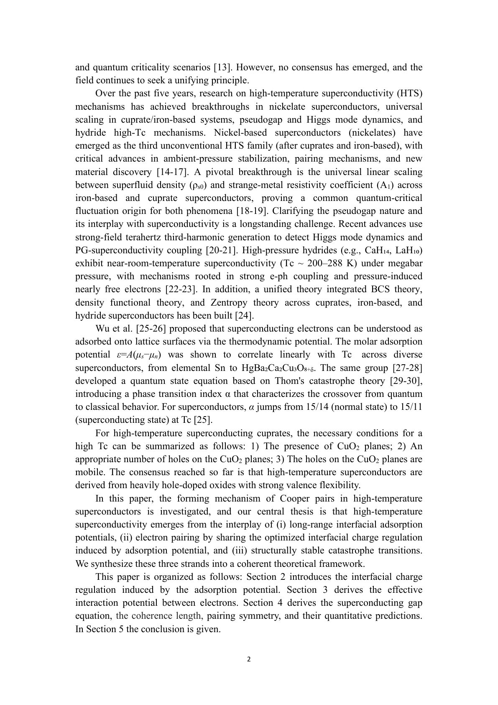
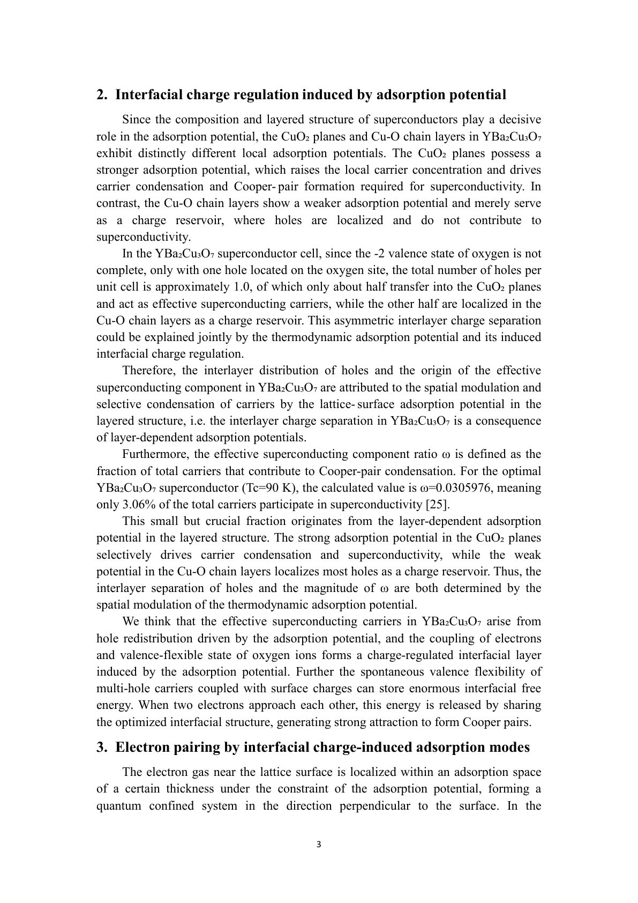
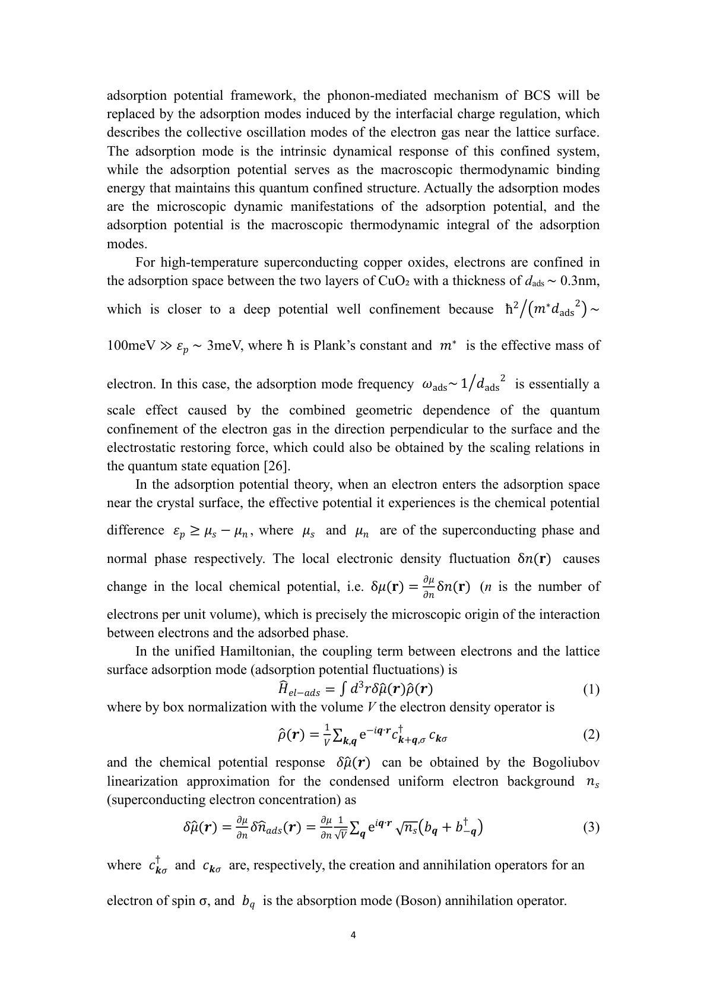
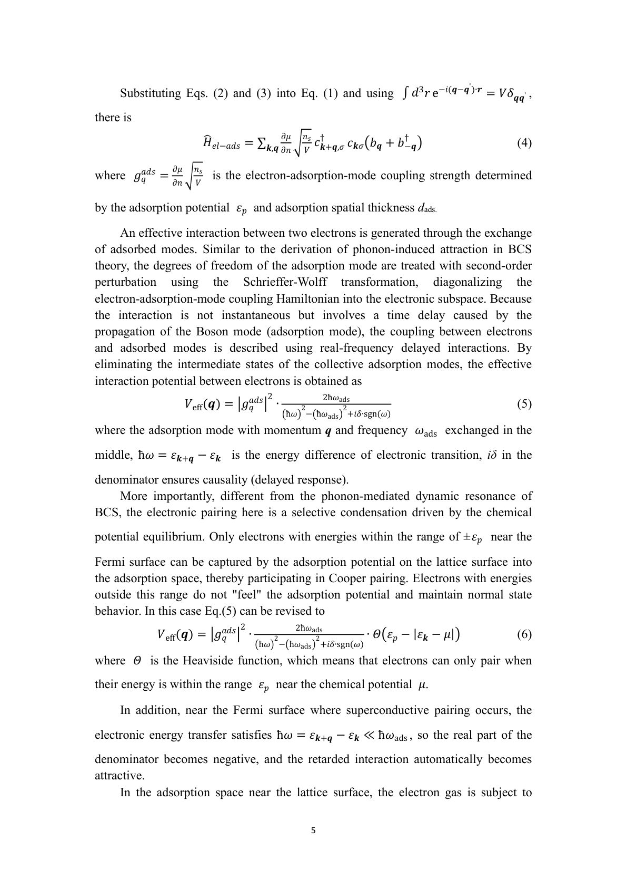
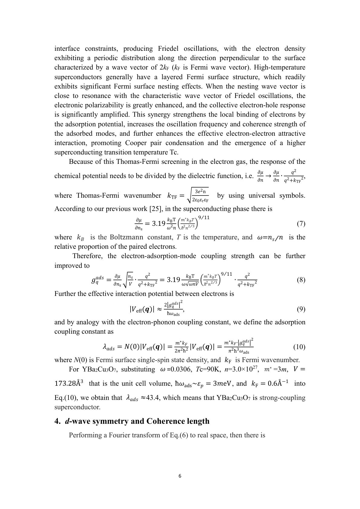
Summary. This paper proposes a new mechanism for high-temperature superconductivity based on an interfacial adsorption mode between electrons and oxygen ions. By modeling the charge-regulated interface in YBCO, the authors provide a theoretical framework that quantitatively matches experimental measurements of the superconducting gap and symmetry. This approach offers a potential alternative to traditional strong-correlation models like RVB theory.
Why it may be interesting. not directly relevant
Main problem. The paper seeks to resolve the unresolved electron pairing mechanism in high-temperature superconductors (specifically cuprates like YBCO), including the origins of d-wave symmetry and the pseudogap phenomenon.
Main result. The authors propose an 'interfacial charge-induced adsorption mode' where electrons pair by exchanging adsorption modes, successfully predicting the superconducting gap (18.37 meV) and coherence length in close agreement with experimental STM/STS data.
Method. The study employs a unified Hamiltonian with Bogoliubov linearization, Schrieffer-Wolff transformation, and the 1D Ginzburg-Landau equation to derive effective interaction potentials and superconducting properties.
Model / system. The system is the YBCO superconductor, modeled as a charge-regulated interfacial layer where electrons are confined in an adsorption space between CuO2 layers, interacting with the valence-flexible state of oxygen ions.
Key observables. Superconducting gap (Delta), coherence length (xi), d-wave symmetry, and pseudogap behavior.
Important parameters / regimes. Adsorption coupling constant (up to 43.4), superconducting gap (18.37 meV), effective superconducting component ratio (omega approx 0.0306), and adsorption potential energy window (epsilon_p).
Assumptions / limitations. The model assumes a charge-regulated interfacial layer induced by adsorption potential and uses the Bogoliubov linearization approximation for the chemical potential response.
Paper structure. The paper identifies the failure of BCS theory, proposes the adsorption potential framework, defines the microscopic Hamiltonian, derives the effective interaction and symmetry, and validates the theory through quantitative comparison with experimental literature.
The electron pairing mechanism by the interfacial charge-induced adsorption mode of high-temperature superconductors is revealed. For the YBCO superconductors, the coupling of electrons and valence-flexible state of oxygen ions forms a charge-regulated interfacial layer induced by the adsorption potential, and electrons are paired by sharing the optimized interfacial structure and exchanging the adsorption mode, generating strong attraction to form Cooper pairs. Then the effective interaction potential between electrons is exactly derived in details, as well as the electron-adsorption-mode coupling strength, in which the adsorption coupling constant is up to 43.4. Furthermore, we verify that d-wave come from the anisotropy of interfacial adsorption forces, and explain the pseudo-energy gap behavior. By using the one-dimensional Ginzburg-Landau equation in the absence of a magnetic field, we obtain the coherence length expression, and the coherence length calculated is very close to the literature results. By establishing the energy gap equation, we obtain the superconducting gap , which is very close to the measured result of 17meV by Scanning Tunneling Microscopy/Spectroscopy. These quantitative predictions close to the known results could verify our theoretical framework.
Authors: Ibuki Okuda, Izumi Takahara, Teruyasu Mizoguchi
Type: theory · Category: disordered systems and neural networks · PDF: https://arxiv.org/pdf/2605.01286v1
Analysis basis: full PDF text, analyzed in chunks
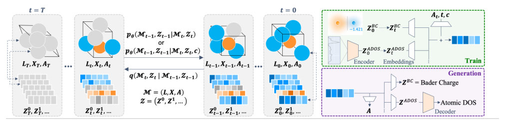
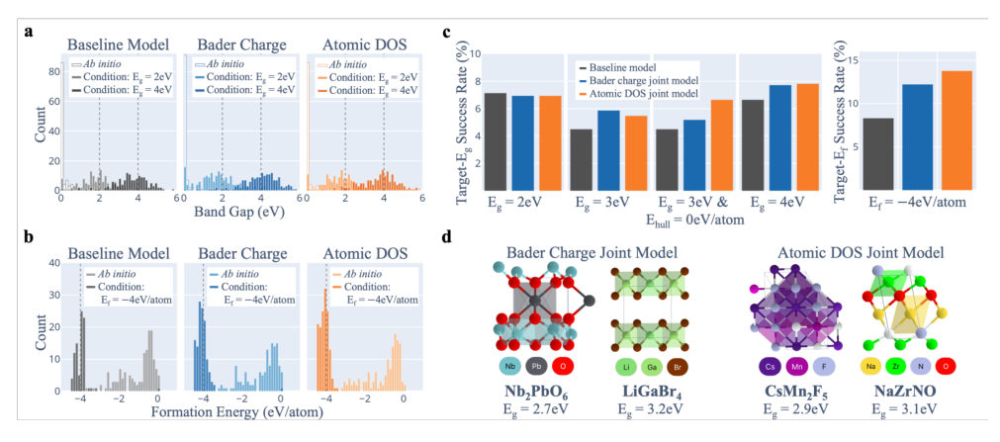
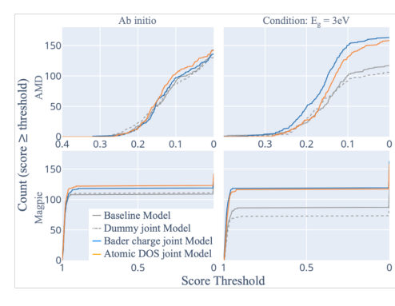
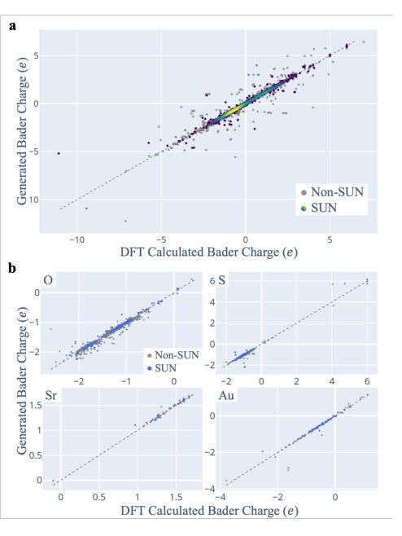
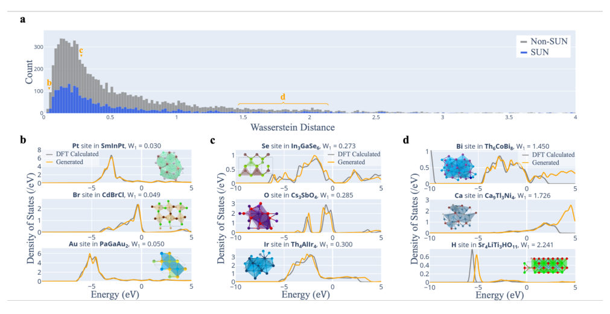
Summary. This paper presents a new generative diffusion model that jointly predicts crystal structures and local electronic properties like Bader charges and density of states. By including electronic information in the generative process, the model successfully targets specific material properties without sacrificing the physical stability or novelty of the generated crystals.
Why it may be interesting. not directly relevant
Main problem. The trade-off in inverse materials design where property-conditioned generation (e.g., targeting specific band gaps) often degrades the structural quality, diversity, and physical validity of the generated crystals.
Main result. Jointly generating crystal structures and local electronic descriptors (Bader charges and atomic DOS) improves the success rate of property targeting and enhances structural quality (VSUN criteria) by guiding the diffusion process toward electronically plausible configurations.
Method. A diffusion-based framework (MatterGen-e-) that jointly denoises structural variables (lattice, positions, atom types) and site-resolved electronic descriptors through a shared score network.
Model / system. The system consists of inorganic crystal structures represented by lattice parameters, atomic positions, and atom types, augmented with local electronic descriptors including Bader charges and 30-dimensional latent vectors representing atomic Density of States (DOS).
Key observables. Band gap, formation energy, Bader charges, atomic Density of States (DOS), uniqueness, novelty, stability (energy above hull), and validity.
Important parameters / regimes. Target band gap (e.g., 3 eV, 4 eV), target formation energy, and the 30-dimensional latent space for DOS.
Assumptions / limitations. The accuracy of the atomic DOS is limited by the chemical sensitivity of elements to their bonding environment; the model assumes that the 30D latent vector is sufficient to capture essential spectral features.
Figures summary. Figure 1 shows the MatterGen-e- framework schematic; Figure 2 displays DFT property distributions and success rates; Figure 3 compares novelty metrics; Figure 4 shows correlation between generated and DFT Bader charges; Figure 5 evaluates DOS quality via Wasserstein distance; Figure 6 illustrates the convolutional autoencoder; Figure 7 provides element-wise error analysis for charges and DOS.
Paper structure. The paper introduces the problem of property-driven structural degradation, proposes a joint diffusion framework, details the architecture for electronic descriptor generation via autoencoders, presents a multi-criteria evaluation (VSUN) against baselines, and concludes with an element-specific analysis of descriptor accuracy.
Inverse design of inorganic crystals, in which structures are generated to satisfy a target property while preserving diversity and physical plausibility, remains more demanding than ab initio generation, as property conditioning can degrade the structural quality that current generative models otherwise achieve. We propose a diffusion framework that jointly denoises crystal-structure variables and site-resolved local electronic descriptors through a shared score network. As representative descriptors, we adopt Bader charge and atomic density of states (atomic DOS). Under both band-gap and formation energy conditioned generation, the joint models achieved higher success rates than the structure-only baseline in most target conditions, while simultaneously increasing the fraction of generated structures that satisfy uniqueness, novelty, thermodynamic stability, and physical validity (VSUN criteria). A dummy-variable control confirms that these gains originate from the electronic content of the descriptors rather than from auxiliary site-wise variables. The generated Bader charges agree with DFT references with an MAE of 5.5e-2 e on stable structures, and the generated atomic DOS captures the coarse spectral profile of the DFT reference around the modal accuracy range, although finer details and accuracy vary with elemental species. These results establish local electronic descriptors as effective generative variables that serve two complementary roles: broadening the explored materials space through increased structural diversity, and mitigating the trade-off between property targeting and structural quality by guiding the structural trajectory toward electronically plausible configurations during joint denoising.
Authors: Alena Samsonova, Viacheslav Dremov, Oleg Klimenko, Nikolai Brilliantov, Vladimir N. Antonov
Type: both · Category: disordered systems and neural networks · PDF: https://arxiv.org/pdf/2605.02432v1
Analysis basis: full PDF text, analyzed in chunks




Summary. This paper uses conductive AFM to map the spatial distribution of metallic filaments in amorphous silicon memristors. It demonstrates that transport is driven by discrete filaments rather than uniform conduction and provides a trap-assisted tunneling model to explain the coexistence of volatile and non-volatile switching.
Why it may be interesting. not directly relevant
Main problem. The study addresses the high stochasticity and device-to-device/cycle-to-cycle variation in Ag/Cu memristors caused by the random nature of filament formation and rupture.
Main result. The researchers found that charge transport is dominated by discrete, spatially distributed filaments with a mean surface density of ~3200 per um2, and that both volatile and non-volatile filaments coexist within a single device.
Method. Conductive Atomic Force Microscopy (c-AFM) was used for spatial resistance mapping, combined with the Johnson-Kendall-Roberts (JKR) model for contact area estimation and a trap-assisted tunneling (TAT) model for transport analysis.
Model / system. The physical system consists of Ag/Cu cation-based memristors embedded in an amorphous silicon (a-Si) insulating matrix. The transport is modeled using multiple trap-assisted tunneling (TAT) between discrete metallic filaments.
Key observables. I-V curves, resistance maps, filament surface density, and filament types (volatile vs. non-volatile).
Important parameters / regimes. Mean filament density (~3200 per um2), effective electron mass (0.3 me), energy gap (2.00-2.75 eV), and filament lengths (1.1 nm for non-volatile, 2.3 nm for volatile).
Assumptions / limitations. The model assumes conductance is limited by tunneling between the last trap and the bottom electrode and that only one filament contributes to the resistance of a single pixel.
Figures summary. Fig 1 shows the device cross-section and AFM topography; Fig 2 presents cumulative and typical I-V curves; Fig 3 compares volatile and non-volatile I-V curves and shows resistance maps at different voltages; Fig 4 plots calculated resistance vs. energy gap.
Paper structure. The paper introduces the problem of stochasticity in memristors, describes the a-Si/Ag/Cu device fabrication and c-AFM experimental setup, presents the spatial mapping of filaments, applies a trap-assisted tunneling model to explain the observed volatility, and concludes with the implications for device uniformity.
Cation-based Ag/Cu filaments formed in an insulating $α$-Si matrix are widely used as memristors in crossbar arrays for efficient in-memory computing. However, the stochastic nature of filament formation and rupture gives rise to device-to-device and cycle-to-cycle variation. Despite successful implementation of large-scale memristor arrays, systematic studies of filament parameters and their spatial distribution in the memristors are scarce. In this work, we use conductive atomic force microscopy (c-AFM) to probe the spatial distribution of conductive filaments in $α$-Si memristors. The charge transport is dominated by a limited number of discrete filaments rather than by uniform conduction across the device area. The systematic analysis of the experiment gives the mean surface density of the conductive filaments $\sim$3200 per $μ\text{m}^2$. Both volatile and non-volatile filaments can be found within one memristor. The experimental data and the nature of volatile and non-volatile filaments may be explained within the model of multiple trap assisted tunnelling. The model yields reasonable estimates for physical properties for both types of filaments.
Authors: Friedrich Schöppler, Lukas Stumpf, Lucas Fuhl, Elena Behr, Charlotte Allard, Christoph Lambert, Richard Martel, Tobias Hertel
Type: experiment · Category: other · PDF: https://arxiv.org/pdf/2605.01906v1
Analysis basis: full PDF text, analyzed in chunks
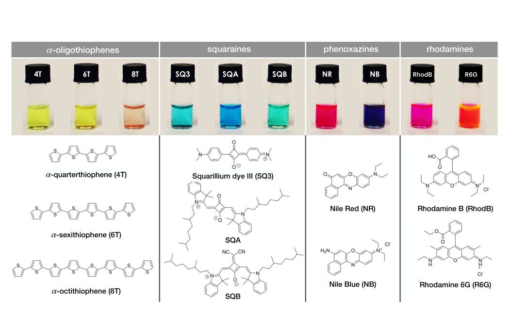
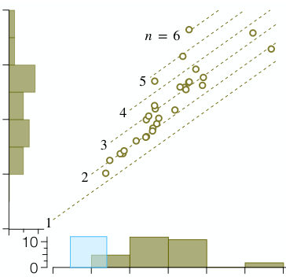
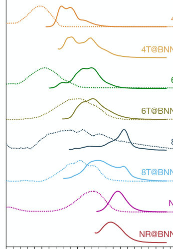
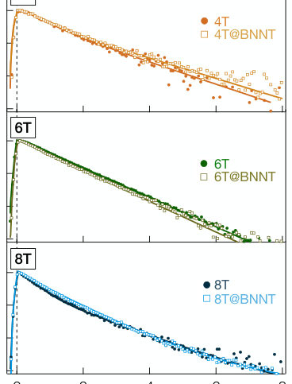
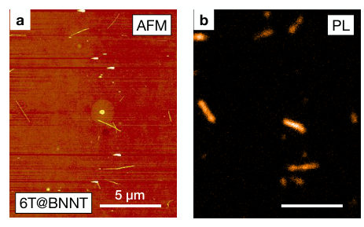
Summary. This paper investigates the optical properties of dyes encapsulated inside boron nitride nanotubes using both ensemble and single-nanotube techniques. It demonstrates that the confinement effect is highly dependent on the guest molecule, acting as a dielectric tuner for some dyes and a conformational regulator for others. The findings reveal that these 1D systems form ordered but structurally heterogeneous ensembles.
Why it may be interesting. not directly relevant
Main problem. Determining how 1D confinement within boron nitride nanotubes (BNNTs) modifies the optical, kinetic, and structural properties of encapsulated pi-conjugated dyes.
Main result. The study finds that BNNT encapsulation induces guest-specific responses, such as dielectric tuning in Nile Red and length-dependent conformational/excitonic modifications in oligothiophenes, resulting in structurally heterogeneous but highly polarized ensembles.
Method. Liquid-phase wet-chemical encapsulation followed by ensemble spectroscopy (absorption, PL, PLQY, TCSPC) and polarization-resolved single-nanotube microscopy.
Model / system. A nanoconfined 1D system consisting of various pi-conjugated dyes (oligothiophenes 4T, 6T, 8T and Nile Red) encapsulated within wide-bandgap, optically transparent boron nitride nanotubes (BNNTs).
Key observables. Absorption/extinction spectra, photoluminescence (PL) spectra, PL quantum yield (PLQY), fluorescence lifetimes, radiative and non-radiative decay rates, and degree of linear polarization.
Important parameters / regimes. Oligomer length, BNNT inner/outer diameters, dielectric constant of the environment (DMF vs. BNNT interior), and van der Waals cross-sections of the dyes.
Assumptions / limitations. The BNNT host is assumed to be electronically inactive and optically transparent, acting primarily as a dielectric and geometric constraint.
Figures summary. Fig 1: Chemical structures and dye classification; Fig 2: BNNT diameter distributions and comparison to dye dimensions; Fig 3: Normalized absorption and PL spectra for 4T, 6T, 8T, and NR; Fig 5: AFM/PL correlation for 6T; Fig 6: Polarization-resolved PL traces; Fig 7: Spatial contrast maps of single nanotubes; Fig 8: Histograms of polarization degree and angle.
Paper structure. The paper begins with the experimental protocol for dye encapsulation, followed by a systematic study of different dye classes (oligothiophenes vs. Nile Red), an analysis of the kinetic decay rates, and concludes with single-nanotube microscopy to probe structural heterogeneity and orientational order.
Boron nitride nanotubes (BNNTs) provide wide-bandgap, optically transparent one-dimensional hosts for molecular dyes, limiting direct electronic participation of the host. Whether dye@BNNT systems produce bright, well-defined J- or H-aggregates or instead heterogeneous emissive ensembles whose character depends on chain length and local packing remains only partly resolved. We address this question using ensemble extinction, photoluminescence, quantum-yield measurements, and TCSPC-derived radiative and non-radiative rates, together with polarization-resolved single-nanotube microscopy on encapsulated quaterthiophene, sexithiophene, octithiophene, and Nile Red, selected from a ten-dye screening. In the oligothiophene series, confinement modifies spectra and excited-state dynamics in a length-dependent manner, with all three oligothiophenes forming weakly emissive ensembles with suppressed effective radiative rates and 6T showing the strongest redistribution between effective radiative and non-radiative decay. The absence of radiative-rate enhancement or fluorescence-lifetime shortening across the series disfavors bright J-aggregate assignments. Polarization-resolved single-nanotube microscopy reveals strongly polarized emission, but with tube-to-tube and intratube variations, identifying oligothiophene@BNNTs as ordered yet structurally heterogeneous confined ensembles. Nile Red provides a complementary case in which the dominant response is dielectric tuning of a solvatochromic charge-transfer state rather than oligothiophene-like aggregate formation. These findings establish dye-filled BNNTs as optically quiet nanoconfined systems in which molecular ordering, dielectric confinement, and guest-guest coupling can be distinguished through combined ensemble and single-nanotube spectroscopy.
Authors: Bastien Michon, Yingpeng Yu, Beatrice D'Alò, Elena Stellino, Gergely Németh, Bosen Wang, Jianping Sun, Jinguang Cheng, Paolo Postorino, Ferenc Borondics, Francesco Capitani
Type: experiment · Category: strongly correlated electrons · PDF: https://arxiv.org/pdf/2605.01651v1
Analysis basis: full PDF text, analyzed in chunks
Summary. This paper demonstrates that a structural transition from a tilted to a tilt-free phase in La3Ni2O7 leads to a massive increase in charge carrier density. By using Raman and infrared spectroscopy, the authors establish a link between the lattice structure and a metallic crossover from a bad metal to a good metal. This provides a unified picture of the electronic and structural evolution in this high-Tc superconducting candidate.
Why it may be interesting. not directly relevant
Main problem. Determining the precise phase boundaries and the impact of structural changes on the electronic properties of the bilayer nickelate La3Ni2O7 under high pressure and temperature.
Main result. The study identifies a structural transition from a tilted Amam phase to a tilt-free phase, which drives a metallic crossover from a bad metal to a good metal with a two-order-of-magnitude increase in carrier density.
Method. High-pressure and high-temperature Raman spectroscopy combined with synchrotron-based infrared and visible reflectivity measurements using a diamond anvil cell.
Model / system. The physical system is La3Ni2O7, a bilayer nickelate with a Ruddlesden-Popper structure, studied under pressures up to 17 GPa and temperatures up to 544 K.
Key observables. Raman phonon modes, Fano line shape (electron-phonon coupling), plasma frequency (carrier density), and infrared reflectivity.
Important parameters / regimes. Pressure (0.4 to 17 GPa), Temperature (up to 544 K), and the structural phases (Amam, coexistence, and tilt-free).
Assumptions / limitations. The reliability of the signal in the diamond phonon interference region is limited, requiring the exclusion of certain spectral ranges from fitting.
Figures summary. Figure 2 shows phonon disappearance, softening, and increased Fano parameter; Figure 3 shows infrared reflectivity spectra and the shift of the plasma edge; Supplementary figures show the evolution of phonon FWHM, intensity, and the massive enhancement of carrier density (omega_p^2) with pressure.
Paper structure. The paper introduces the nickelate system and the problem of structural-electronic coupling, describes the experimental setup for high-pressure/temperature spectroscopy, presents Raman results tracking structural transitions and electron-phonon coupling, presents infrared results demonstrating the metallic crossover, and concludes with a unified phase diagram.
La$_3$Ni$_2$O$_7$, a bilayer nickelate with Ruddlesden-Popper structure, undergoes a pressure-induced structural transition from a tilted Amam phase to an untilted Fmmm (or I4/mmm) phase near 10-15 GPa, concomitant with the emergence of high-T$_c$ superconductivity (T$_c$ $\sim$ 80 K). Despite intense interest, the phase boundaries and the impact of structural changes on the electronic properties remain unclear. Here, we combine high-pressure and high-temperature Raman and synchrotron-based infrared spectroscopies to map the structural and electronic evolutions. Raman measurements confirm the pressure-driven structural transition and reveal the emergence of Fano line shapes, indicating enhanced electron-phonon coupling. High-temperature data show analogous spectral signatures above 544 K, suggesting an unreported upper temperature limit of the Amam phase within the T-P phase diagram of this system. Infrared reflectivity measurements evidence a concomitant metallization, with a tremendous two-order-of-magnitude increase in carrier density, marking a crossover from a bad metal to a good metal. These results establish a unified picture of the structural transition and its strong coupling to the electronic properties.
Authors: Abhinna Rajbanshi, G. M. Zills, Alexander M. Donald, Daniel Duong, David Graf, James J. Hamlin, Mark W. Meisel, I. Vekhter, Williams A. Shelton, Rongying Jin
Type: both · Category: strongly correlated electrons · PDF: https://arxiv.org/pdf/2605.02119v1
Analysis basis: full PDF text, analyzed in chunks
Summary. This paper demonstrates that growing MnBi2Te4 in a magnetic field allows for the creation of a metastable ferromagnetic state with a different electronic structure than the standard antiferromagnetic version. This method provides a new way to tune the topological properties and magnetic phases of intrinsic magnetic topological insulators.
Why it may be interesting. not directly relevant
Main problem. The study aims to find ways to control and reconfigure the magnetic ordering and electronic properties of the magnetic topological insulator MnBi2Te4 beyond its native A-type antiferromagnetic state.
Main result. By using magnetic-field-assisted synthesis, the researchers successfully stabilized a metastable ferromagnetic ground state in MnBi2Te4, which exhibits a different Fermi surface and potential type-II Weyl semimetal phase.
Method. The researchers used a self-flux growth method in a 9 T magnetic field and characterized the resulting crystals using X-ray diffraction, magnetometry (VSM, torque), transport measurements (resistivity, Hall effect), and first-principles DFT calculations.
Model / system. The physical system is MnBi2Te4, a layered van der Waals intrinsic magnetic topological insulator. The study compares the native A-type antiferromagnetic (AFM) state with a field-induced metastable ferromagnetic (FM) state.
Key observables. Magnetic susceptibility, magnetization, magnetic torque, electrical resistivity, Hall resistivity, de Haas-van Alphen oscillations, and specific heat.
Important parameters / regimes. Curie temperature (Tc approx 12.5 K), magnetic field strength (up to 35 T), and the transition from S=5/2 to S=1/2 spin state.
Assumptions / limitations. The study assumes that the observed changes in electronic properties are primarily driven by the reconfiguration of the magnetic ground state and orbital contributions rather than spin scattering.
Figures summary. Figure 1 shows the crystal structure, XRD patterns, and peak shifts; Figure 2 displays temperature-dependent magnetic susceptibility; Figure 3 presents resistivity and Hall effect data.
Paper structure. The paper introduces the problem of magnetic control, describes the field-assisted synthesis method, presents structural and magnetic characterization of the new phase, details the transport and quantum oscillation measurements, and concludes with DFT-supported analysis of the electronic structure.
Magnetic topological insulators provide a unique platform to explore the interplay between magnetism and topology. MnBi$_2$Te$_4$, known for its A-type antiferromagnetic (AFM) ground state, undergoes a striking transformation when single crystals are grown in an applied magnetic field. Despite retaining the same crystal structure, field-grown MnBi$_2$Te$_4$ exhibits a ferromagnetic (FM) ground state with a Curie temperature of $\sim$ 12.5 K, confirmed by magnetization, magnetic torque, electrical resistivity, and specific heat measurements. First-principles calculations support these findings, revealing that magnetic-field-assisted synthesis can effectively reconfigure the ground-state spin order and thereby modify the material's electronic properties, as reflected in the de Haas-van Alphen oscillation seen in the magnetic torque.
Authors: Nidhin George Mathews, Erkka J. Frankberg, Vivek Devulapalli, Chandan Kumar, Barbara Putz, Aloshious Lambai, Sergei Khakalo, Mattia Cabrioli, Bjarke Holl Christensen, Janne-Petteri Niemelä, Arnold Milenko Müller, Fabio Di Fonzo, Ivo Utke, Erkki Levänen, Gaurav Mohanty
Type: experiment · Category: disordered systems and neural networks · PDF: https://arxiv.org/pdf/2605.01917v1
Analysis basis: full PDF text, analyzed in chunks
Summary. This paper explores how different deposition methods affect the mechanical ductility and fracture of amorphous alumina films at the microscale. It reveals that while defects in sputter-deposited films cause brittle failure, high-quality PLD and ALD films can undergo significant plastic deformation. These findings are crucial for developing damage-tolerant amorphous oxide coatings for electronics.
Why it may be interesting. not directly relevant
Main problem. Investigating the origin and limits of room-temperature microscale bending plasticity and fracture behavior in amorphous aluminum oxide (a-Al2O3) films.
Main result. The study demonstrates that PLD and some ALD a-Al2O3 films exhibit substantial microscale bending plasticity (strains > 10%), while SD films fail brittly due to columnar defects; however, notched tests show identical fracture toughness across all methods, ruling out crack-tip plasticity.
Method. In situ SEM microcantilever bending (MCB) and notched microcantilever bending (NCB) experiments, supplemented by nanoindentation, TEM, XRD, and 3D Finite Element Modeling.
Model / system. Amorphous aluminum oxide (a-Al2O3) thin films (~2 micrometers thick) deposited via three different routes: Pulsed Laser Deposition (PLD), Atomic Layer Deposition (ALD), and Sputter Deposition (SD).
Key observables. Total strain, fracture toughness (KIC), hardness (H), elastic modulus (E), yield stress, and microstructural features like columnar voids.
Important parameters / regimes. Yield stress (~5.6 GPa), fracture toughness (3.1 +/- 0.2 MPa.m0.5), and film thickness (~2-10 micrometers).
Assumptions / limitations. The material is modeled as an isotropic elastic-plastic material without hardening in FEM simulations; the electron beam is assumed not to induce plasticity.
Figures summary. Figures include microcantilever geometries, XRD spectra and TEM images confirming amorphous structure, RBS/ToF-ERDA elemental profiles, stress-strain curves, and FEM-predicted stress distributions.
Paper structure. The paper introduces the problem of plasticity in amorphous oxides, details the three deposition methods and characterization techniques, presents mechanical testing results (unnotched vs. notched), discusses the role of defects and microstructure, and concludes with technological implications.
Recent work has demonstrated microscale compressive plasticity in pulse laser deposited (PLD) amorphous alumina (a-Al2O3). This work explores microscale bending plasticity and fracture behavior of a-Al2O3 films deposited using three different methods-PLD, atomic layer deposition (ALD) and sputter deposition (SD). The three deposition routes produced amorphous films with similar stoichiometric compositions. We demonstrate, for the first time, bending plasticity in PLD and ALD a-Al2O3 films at microscale using in situ microcantilever bending experiments at room temperature. All tested PLD a-Al2O3 microcantilevers showed substantial ductile behavior in bending by accommodating total strains >10% without fracture. Half of the tested ALD a-Al2O3 cantilevers exhibited elastic brittle fracture while the other half showed bending plasticity, indicating that the observed deformation behavior is strongly influenced by the presence and distribution of defects within the tested volume. All SD a-Al2O3 microcantilevers showed elastic brittle failure attributed to their columnar growth microstructure. The microscale bending response was found to be highly dependent on the film deposition method highlighting the role of defects in suppressing plasticity mechanisms. Notched microcantilever bending tests on all three films showed brittle failure with similar fracture toughness value of 3.1 +/- 0.2 MPa.m0.5, effectively ruling out any localized crack tip plasticity. These findings underscore the importance of minimizing defects during fabrication in order to develop damage tolerant amorphous oxides. Nonetheless, the observation of bending plasticity in both PLD and ALD microcantilevers, which include a tensile stress component as well, suggests that the plastic deformation mechanisms in amorphous alumina are more general and are not exclusively governed by the deposition method.
Authors: Daniela Täuber
Type: experiment · Category: other · PDF: https://arxiv.org/pdf/2605.01940v1
Analysis basis: full PDF text, analyzed in chunks
Summary. This paper clarifies the physical principles and practical applications of mid-infrared photo-induced force microscopy (IR-PiF-IR). It provides strategies for accurate chemical imaging by decoupling field-coupling effects and demonstrates the technique's ability to resolve nanometer-scale chemical changes in biological structures like bacterial cell walls.
Why it may be interesting. not directly relevant
Main problem. Addressing technical and physical questions regarding Mid-infrared photo-induced force microscopy (IR-PiF-IR), specifically its physical background, practical handling, and potential applications in biological and chemical imaging.
Main result. The paper demonstrates that IR-PiF-IR can resolve chemical composition (e.g., peptidoglycan vs. membrane) by comparing intensities at different frequencies to decouple field-coupling effects, and shows its utility in visualizing antibiotic-induced changes in bacteria.
Method. An AFM-based method using tip-enhanced mid-infrared illumination (via QCLs) and heterodyne side-band detection to measure mechanical forces induced by thermal expansion.
Model / system. The experimental platform involves an AFM tip interacting with various systems including Bacillus subtilis bacteria, PMMA nanoparticles, and molecular monolayers on gold or CaF2 substrates.
Key observables. PiF contrast, spectral line shapes (dissipative vs. dispersive), chemical maps, and spectral shifts in amide bands.
Important parameters / regimes. Lateral resolution < 5 nm, spectral range 800-1800 cm-1, and penetration depth ranging from volume to surface-sensitive.
Assumptions / limitations. Assumes the tip-sample interaction force is the sum of conservative and non-conservative forces and that the heterodyne PiF signal is proportional to the gradient of the tip-sample force.
Figures summary. Fig 1: Comparison of PiF-IR scans of B. subtilis using RGB merge for chemical mapping. Fig 2: Classification of AFM-IR methods by resolution/depth and PMMA refractive index plots. Fig 4: Chemometric analysis of bacterial surfaces and spectral signatures of hydrogen bond formation.
Paper structure. The paper is structured as a response to specific technical questions, covering physical mechanisms, comparison of AFM-IR modes, practical application to biological samples (bacteria/exosomes), and discussions on sensitivity and substrate effects.
Mid-infrared photo-induced force microscopy (IR-PiFM/PiF-IR) enables high-resolution chemical imaging of surfaces with lateral resolution less than 5 nm. Here are some answers to questions about the physical background, practical handling and potential applications of PiF-IR including its use in the context of studying antimicrobial interaction. Such questions had been addressed to me during the Faraday Discussions on Vibrations at Interfaces which took place in April 2026 in Manchester/UK. The discussion was part of the theme "What is the question, what is the technique?" in the context of which I presented our recent work [James et al., Faraday Discussions, 2026, doi: 10.1039/d6fd00003g]. A modified version of this manuscript will be published in the themed collection "Vibrations at Interfaces" in Faraday Discussions.
Authors: Soham Chandra, Soumyajit Sarkar
Type: theory · Category: strongly correlated electrons · PDF: https://arxiv.org/pdf/2605.02065v1
Analysis basis: full PDF text, analyzed in chunks
Summary. This paper presents a unified computational framework to predict the magnetic properties of Cobalt Ferrite nanostructures across multiple length and time scales. By linking first-principles electronic structure calculations to atomistic and micromagnetic models, it enables the rational design of materials for spintronics and hyperthermia. The approach demonstrates how microscopic features like cation inversion and surface disorder dictate macroscopic device performance.
Why it may be interesting. not directly relevant
Main problem. The difficulty of bridging the gap between Angstrom-scale electronic interactions and macroscopic magnetic observables in Cobalt Ferrite nanostructures, specifically accounting for the nonlinear coupling between cation inversion, strain, and surface effects.
Main result. The establishment of a predictive multiscale computational framework that successfully transfers parameters from DFT+U to atomistic and micromagnetic models to predict size-dependent anisotropy, Curie temperature, and switching dynamics.
Method. A hierarchical multiscale pipeline integrating Density Functional Theory with Hubbard corrections (DFT+U), atomistic spin dynamics (Heisenberg Hamiltonian, Monte Carlo, and LLG equations), and continuum micromagnetic modeling.
Model / system. Cobalt Ferrite (CoFe2O4) nanostructures, including nanoparticles and thin films, modeled using an inverse spinel lattice with tetrahedral (A) and octahedral (B) sublattices and a generalized classical Heisenberg Hamiltonian.
Key observables. Curie temperature (Tc), coercivity (Hc), saturation magnetization (Ms), magnetocrystalline anisotropy (K1), magnetostriction, and hyperthermia response (SAR).
Important parameters / regimes. Exchange constants (Jij), magnetocrystalline anisotropy (K1), magnetoelastic coefficients (B1), cation inversion parameter (lambda), and Hubbard U parameter.
Assumptions / limitations. The use of a classical approximation for spins (neglecting quantum fluctuations at low temperatures) and the reliance on the accuracy of the Hubbard U parameter in DFT+U.
Figures summary. Figure 1 shows a schematic of the multiscale workflow from DFT to micromagnetics; Figure 2 illustrates the Monte Carlo simulation workflow including lattice initialization and Metropolis updates.
Paper structure. The paper identifies the need for multiscale modeling, establishes the electronic-scale foundation via DFT+U, develops the atomistic spin Hamiltonian and statistical mechanics approach, applies the framework to case studies (nanoparticles and thin films), and discusses future directions like machine learning and DFT+DMFT.
Cobalt ferrite (CoFe$_2$O$_4$) is a prototypical ferrimagnetic spinel oxide whose exceptional magnetic anisotropy, magnetoelastic coupling, and thermal stability underpin applications in spintronics, magnetic hyperthermia, energy harvesting, and catalysis. This chapter presents a comprehensive computational framework that integrates electronic$-$structure calculations with atomistic spin modeling, statistical mechanics, and continuum micromagnetics to predict magnetic functionality across length and time scales. Starting from density functional theory with Hubbard corrections (DFT$+$U), we derive exchange constants J$_{ij}$, magnetocrystalline anisotropy K$_1$, and magnetoelastic coefficients B$_1$, accounting for cation inversion, strain, and correlation effects. These parameters feed into generalized Heisenberg Hamiltonians, enabling Monte Carlo and Landau-Lifshitz-Gilbert simulations of finite-size effects, hysteresis, coercivity, and hyperthermia response in nanoparticles and thin films. Coarse-graining strategies bridge to micromagnetic modeling, ensuring consistent parameter flow without empirical fitting. Computational case studies demonstrate size-dependent anisotropy enhancement, surface spin disorder, strain-tunable switching, and doping trends, revealing design principles inaccessible to experiment alone. Validation against benchmarks, e.g. Curie temperature, anisotropy constants, coercivity, magnetostriction, confirms predictive accuracy. Current challenges, e.g., U$-$parameter sensitivity, realistic surface chemistry, spin-lattice coupling, and large-scale integration are discussed alongside emerging directions including DFT$+$DMFT, coupled dynamics, and machine-learned potentials.
Authors: S. Luza-Vega, Y. Zhao, E. Martínez-Pañeda
Type: theory · Category: other · PDF: https://arxiv.org/pdf/2605.01806v1
Analysis basis: full PDF text, analyzed in chunks
Summary. This paper demonstrates that electrolyte infiltration into battery particle cracks significantly alters electrochemical reaction rates and mechanical stress profiles. By using a coupled electro-chemo-mechanical model, the authors show that standard models neglecting crack-electrolyte coupling systematically underestimate both battery capacity and fatigue-inducing stresses.
Why it may be interesting. not directly relevant
Main problem. Investigating how electrolyte wetting within cracks in Ni-rich cathode particles redistributes electrochemical reactions and affects battery degradation and performance.
Main result. The study finds that electrolyte wetting causes a 8x amplification of lithium flux at crack tips and that neglecting this coupling leads to a 25-32% underestimation of delivered capacity and a 10% underestimation of tensile stresses.
Method. A controlled comparison between a fully coupled electro-chemo-mechanical finite element model and a simplified single-particle model using a uniform flux assumption.
Model / system. A cracked Ni-rich layered oxide cathode particle (radius 5 um) embedded in a composite electrode containing a conductive carbon binder and liquid electrolyte.
Key observables. Lithium concentration, electrostatic potential, stress fields, interfacial reaction rates (flux), delivered capacity, and tensile stresses.
Important parameters / regimes. 1C and 3C discharge rates, lithiation/delithiation-induced volumetric changes, and crack geometry (length 1.77 um, width 0.078 um).
Assumptions / limitations. The electrolyte is treated as a binary liquid; cracks are assumed to be stationary; the electrolyte domain is a homogenized representation of liquid and carbon binder; no CEI formation is considered.
Figures summary. Figure 1 shows the problem overview and model geometries; Figure 2 shows equilibrium potential and molar volume vs stoichiometry; Figure 3 shows electrolyte potential distribution; Figure 4 shows spatial reaction rate and overpotential distribution; Figure 5 shows lithium concentration and hydrostatic stress; Figure 6 shows lithium flux evolution; Figure 8 shows stress and chemical strain ratios.
Paper structure. The paper introduces the problem of particle cracking, presents the two modeling frameworks (Realistic vs. Idealized wetting), details the governing physics and numerical implementation, compares results regarding flux redistribution and concentration gradients, evaluates the impact on capacity and stress, and concludes with the implications for battery degradation modeling.
Cathode particle fracture is widely recognised as a major degradation mechanism in lithium-ion batteries, yet cracking also permits electrolyte wetting of newly exposed internal surfaces, modifying interfacial reaction pathways. The mechanistic role of electrolyte wetting in redistributing reactions within cracked particles remains unclear. Here, we isolate this effect through a controlled comparison between (i) a fully coupled electro-chemo-mechanical model resolving lithium concentration, electrostatic potential, and stress fields in both the active material and the electrolyte inside and outside cracks, and (ii) a single-particle chemo-mechanical model employing the conventional uniform flux assumption. The coupled model predicts strong spatial heterogeneity in interfacial reaction rates, with flux amplification approximately 8x relative to the imposed uniform flux at the crack tip. Reaction redistribution, and thus lithium flux, is governed predominantly by local solid-state lithium concentration and stress variations, while electrolyte potential gradients inside cracks remain secondary under the conditions considered. Uniform flux models can underpredict delivered capacity by 25% at 1C-rate; this discrepancy increases at higher rates. They also underestimate tensile stresses throughout the delithiation process by 10%, directly affecting crack driving conditions. These results demonstrate that neglecting crack-electrolyte coupling leads to systematic underestimation of both utilisation limits and fatigue-relevant stress histories.
Authors: Koushik Ghorai, Sayan Sarkar, Amit Agarwal
Type: theory · Category: other · PDF: https://arxiv.org/pdf/2605.01812v1
Analysis basis: full PDF text, analyzed in chunks
Summary. This paper introduces the orbital-splitter current in altermagnets, an orbital analogue to the spin-splitter current. It demonstrates that in FeSb2, this current is purely intrinsic and can be much larger than the spin-splitter current, potentially enabling much faster magnetization switching in spintronic devices.
Why it may be interesting. not directly relevant
Main problem. The paper investigates the existence and properties of an orbital-splitter current (OSC) in collinear altermagnets, specifically looking for an orbital analogue to the known spin-splitter current.
Main result. The authors identify a purely intrinsic, highly anisotropic OSC in the d-wave altermagnet FeSb2 that can exceed the spin-splitter current by nearly four times and significantly accelerate magnetization switching in heterostructures.
Method. The study uses a density-matrix formalism and the quantum Liouville equation to derive orbital conductivity, combined with systematic crystallographic symmetry analysis of magnetic point groups.
Model / system. The primary system is the d-wave altermagnet FeSb2, modeled using a minimal tight-binding Hamiltonian that captures sublattice-dependent spin splitting and spin-orbit coupling.
Key observables. Orbital-splitter current (OSC), spin-splitter current (SSC), orbital Hall conductivity, orbital Berry curvature, and magnetization switching time.
Important parameters / regimes. Néel order parameter (Jz), spin-orbit coupling strength (lambda), relaxation time (tau), and chemical potential (mu).
Assumptions / limitations. The derivation assumes a steady-state solution to the quantum Liouville equation and utilizes the weak-scattering limit for the intrinsic contribution.
Figures summary. Figure 1 shows the schematic of the orbital-splitter effect; Figure 3 displays polar plots of spin and orbital currents; Figure 4 presents orbital conductivity dependence on the Néel vector; Figure 5 compares spin and orbital current components; Figure 6 shows AHE conductivity; Figure 7 compares magnetization switching times.
Paper structure. The paper introduces the OSC concept, provides a symmetry-based derivation of orbital conductivity, analyzes the specific case of FeSb2, explores the angular dependence of currents, and concludes with the application to magnetization switching in heterostructures.
In collinear altermagnets, the real-space rotational symmetry of opposite spin sublattices generates a large nonrelativistic spin-splitter current. Orbital transport in this setting has remained largely unexplored. Here, we introduce the orbital-splitter current (OSC), an orbital analogue of the spin-splitter current, and derive its Drude and orbital Berry curvature contributions using a density-matrix framework. We show that the $d$-wave altermagnet $\mathrm{FeSb}_2$ realizes a purely intrinsic OSC because mirror symmetries suppress the Drude channel by forcing the orbital magnetic moment to vanish. The OSC response is strongly anisotropic and, for selected field orientations, exceeds the spin-splitter current by nearly a factor of four. We further show that the OSC generates a damping-like torque in an altermagnet-ferromagnet heterostructure and, when combined with the spin-splitter current, significantly reduces the magnetization switching time.
← Index · ← Previous · Next →